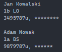
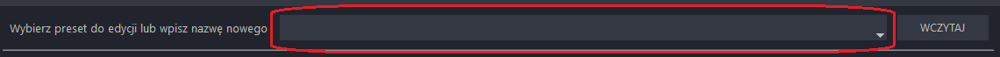
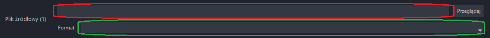

Dane dla przykładu:
W praktyce układ danych wygląda tak (* - nieznaczące dla programu dane):
[imię] [nazwisko]
[klasa] [szkoła]
[login], [haslo*]
Uruchom program i otwórz zakładkę FORMAT DANYCH. W pierwszej kolejności należy nadać nazwę presetowi formatu w polu zaznaczonym poniżej lub wybrać preset już istniejący z listy rozwijanej
Aby przejśc do edycji presetu należy wcisnąć przycisk WCZYTAJ
Wybierz odpowiednią opcję w zależności od tego jakich osób dane znajdują się w pliku wejściowym
W tym polu należy wpisać znaki, które oddzielają zbiór danych pojeńczych osób. Jeżeli zbiór danych odziela znak końca wiersza (wciśnięcie ENTER) należy wpisać <enter> (ilość zależna od ilości znaków końca wiersza). Niedozwolone znaki to litery, cyfry oraz * i \. Dla przykładowych danych będzie to "<enter><enter>"
W tym polu należy wpisać znaki, które oddzielają wiersze. Zazwyczaj jest to jeden znak końca wiersza. Jeżeli wiersze odziela znak końca wiersza (wciśnięcie ENTER) należy wpisać <enter> (ilość zależna od ilości znaków końca wiersza). Niedozwolone znaki to litery, cyfry oraz * i \. Dla przykładowych danych będzie to "<enter>"
W tym polu należy wpisać znaki, które oddzielają pojedyńcze dane. Każdy kolejny separator musi być zapisany w następnej linijce. Jeżeli dane odziela znak końca wiersza (wciśnięcie ENTER) należy wpisać <enter> (ilość zależna od ilości znaków końca wiersza). Niedozwolone znaki to litery, cyfry oraz * i \. Dla przykładowych danych będzie to (znaki są podkreślone aby je wyróżnić):
"""
,
"""
W tej sekcji należy dla każdego typu danych ustawić jego położenie w zbiorze. Typy SZKOŁA i KLASA nie są istotne jeżeli w sekcji TYP OSOBY zosła zaznaczona opcja Nauczyciele. Dla przykładowych danych uczniów bedzie to:
| Wiersz | Pozycja w wierszu |
|
|---|---|---|
| Login | 3 | 1 |
| Imię | 1 | 1 |
| Nazwisko | 1 | 2 |
| Szkoła | 2 | 2 |
| Klasa | 2 | 1 |
W tym polu należy wybrać kodowanie pliku wejściowego.
Aby zapisać preset należy wcisnąć przycisk ZAPISZ. Aby anulować tworzenie należy wcisnąć przycisk Anuluj
Uruchom program i przejdź do zakładki USTAWIENIA.
W tym polu należy wybrać kodowanie, w jakim ma być zapisany plik csv z danymi uczniów do importu w panelu administracyjnym serwisu szkoły
W tym polu należy wybrać kodowanie, w jakim ma być zapisany plik csv z danymi uczniów do importu w panelu administracyjnym serwisu portal.office.com
W tym polu należy wpisać domenę serwisu szkoły. Będzie ona używana w mailu każdego uzytkownika. Przykład: jan.kowalski2023a@losobolew.pl
W tym polu należy wpisać ilość miejsca (w megabajtach) przeznaczoną dla każdego użytkownika na przechowywanie maili. Te dane są używane w pliku wyjściowym poczty. Przykład: jan.kowalski2023a@losobolew.pl,1234567u:JK,500
W tym polu należy wpisać nazwę kraju zamieszkania użytkowników. Będzie ona wykorzystywana w pliku wyjściowym office oraz widoczna w profilu użytkownika w serwisie office. Przykład: jan.kowalski2023a@losobolew.pl,Jan,Kowalski,Jan Kowalski,uczeń,1b LO,,,,,,,,,Rzeczpospolita Polska
Jeżeli chcesz aby w pierwszej linii pliku wyjściowego dla poczty znajdował się nagłowek, zaznacz opcję "Umieść w pliku". Zawartość nagłówka można edytować w polu tekstowym po lewej.
Jeżeli chcesz aby w pierwszej linii pliku wyjściowego dla office znajdował się nagłowek, zaznacz opcję "Umieść w pliku". Zawartość nagłówka można edytować w polu tekstowym po lewej.
W tych polach należy wpisać datę rozpoczęcia roku szkolnego (z reguły). W pierwszym polu (po lewo) należy wpisać dzień, a w drugim (po prawo) miesiąc. Te dane są używane do obliczania roku w znaczniku klasy (przykłądowy znacznik klasy: 2023a). W przypadku generowania plików na nowy rok szkolny przed jego rozpoczęciem, należy wprowadzić datę dzisiejszą lub wcześniejszą.
W tym polu należy wprowadzić dane każdej szkoły w zespole szkół (po jednej szkole w linijce). Wymagane są trzy "kolumny danych". Są one odzielone znakami " | ".
W pierwszej kolumnie należy wpisać oznaczenie szkoły (dowolne bez spacji, najlepiej jak najkrótsze). Te dane będą używane w znaczniku klasy, jeżeli w trzeciej kolumnie została wybrana opcja "1".
W drugiej kolmnie należy wpisać liczbę klas w danej szkole. Te dane używane są do obliczenia roku w znaczniku klasy.
W trzeciej kolumnie można wybrać opcję "1" lub "0" (Prawda/Fałsz). Wybierz "1" jeżeli chcesz, aby w znaczniku klasy znajdowało się oznaczenie szkoły (przykład: 2023bs). Wybierz "0" jeżeli chcesz, aby w znaczniku klasy znajdowała się litera klasy (przykład: 2023a).
Aby zapisać ustawienia należy wcisnąć przycisk ZAPISZ. Aby anulować zmiany wciśnij przycisk Anuluj
W pierwszej kolejności należy przygotować pliki wejściowe oraz stworzyć presety formatu dla tych plików, według instrukcji w sekcji "Tworzenie/edytowanie format presetu dla danego pliku źródłowego" (jednego presetu formatu można używac do kilku plików jeżeli pliki mają ten sam format i to samo kodowanie)
Przejdź do zakładki GENERATOR CSV. Możesz przetworzyć naraz 4 pliki wejściowe. Dla każdego pliku należy wybrać jego lokalizację (wpisać ją w polu, oznaczonym kolorem czerwonym na poniższym zdjęciu, lub otworzyć okno wyboru lokalizacji za pomocą przycisku "Przeglądaj" i tam wybrać plik. Następnie należy wybrać preset formatu, odpowiedni dla pliku wejściowego, w polu oznaczonym kolorem zielonym na poniższym zdjęciu.
Wybierz lokalizację zapisu pliku wyjściowego dla serwisu szkoły, wpisując lokalizację wraz z nazwą pliku w polu, oznaczonym kolorem czerwonym na poniższym zdjęciu, lub otwierając okno wyboru lokalizacji za pomocą przycisku "Przeglądaj" obok tego pola i tam wybierając plik.
Wybierz lokalizację zapisu pliku wyjściowego dla serwisu portal.office.com, wpisując lokalizację wraz z nazwą pliku w polu, oznaczonym kolorem zielonym na poniższym zdjęciu, lub otwierając okno wyboru lokalizacji za pomocą przycisku "Przeglądaj" obok tego pola i tam wybierając plik.
Aby rozpocząć generowanie wciśnij przycisk START i potwierdź komunikat. Pliki wyjściowe zostaną zapisane w wybranych lokalizacjach. Przed importem upewnij się że w plikach nie występują błędy.
Uruchom program i przejdź do zakładki USTAWIENIA.
Naciśnij przycisk "Zarządzaj presetami formatu".
Zaznacz presety formatu które chcesz usunąć.
Naciśnij przycisk "Usuń zaznaczone"
Uruchom program i przejdź do zakładki USTAWIENIA.
Naciśnij przycisk "Przywróć domyślne ustawienia ogólne". Po potwierdzeniu i ponownym uruchomieniu programu, ustawienia zostaną przywrócone do ustawień fabrycznych.
Uruchom program i przejdź do zakładki USTAWIENIA.
Naciśnij przycisk "Przywróć domyślne ustawienia wyglądu". Po potwierdzeniu i ponownym uruchomieniu programu, wygląd zostanie przywrócony do ustawień fabrycznych.
Otwórz menu start i wpisz "%appdata%"
Przejdź do folderu "Generator CSV"
Za ustawienia programu odpowiedzialny jest plik "config.cfg", a za wygląd plik "style.cfg". Użyj dowolnego edytora plików tekstowych, do edycji tych plików. Więcej informacji o tych plikach znajduje się w Dokumentacji technicznej.
Aby przywrócić te pliki do stanu fabrycznego wykonaj kroki z sekcji odpowiednio "Przywracanie domyślnych ustawień ogólnych programu" lub "Przywracanie domyślnego wyglądu programu"